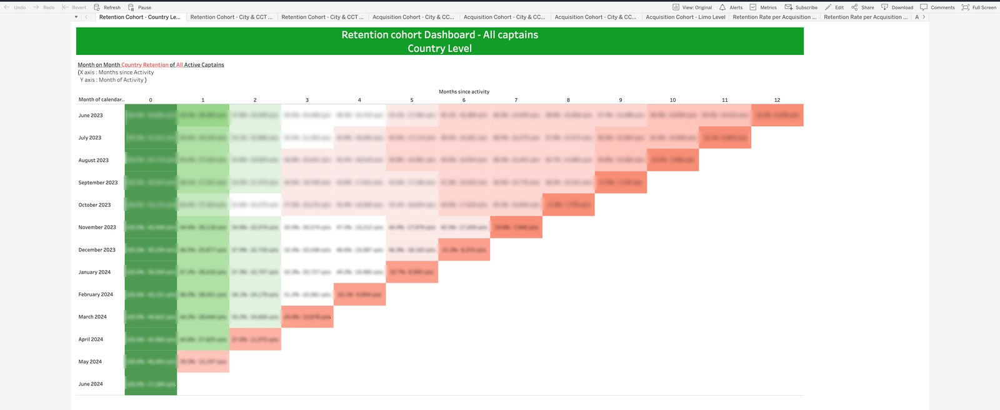
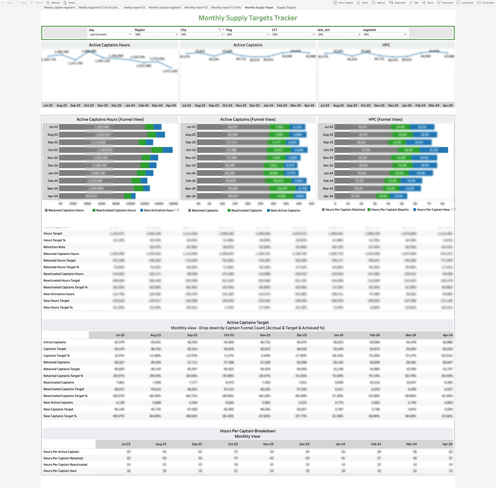

Supply Lifecycle Intelligence
The full life of a captain, measured: profile and demographics, 13-month retention cohorts, churn decomposed by cause, the deepest segmentation pivots in the stack, supplier 360 views, and payout monitoring — one product, five dashboards, the largest workbook I built.
Note on numbers: no figure from inside a client dashboard is presented here as an achievement. Published screenshots have absolute figures and supplier names blurred.
01The Business Problem
Supply is the expensive side of a ride-hailing marketplace: captains are recruited, onboarded, incentivized — and then some leave. The questions that decide budgets: which captains churn, why, and what does it cost? Is the supply funnel on target this month? And is churn voluntary, or is the platform blocking its own supply?
02My Role
Sole analyst on the product: SQL layer, cohort modeling, segmentation design, and the multi-tab Tableau architectures. This product carries the deepest pivots and the largest workbook of the 24 dashboards I documented there.
03What I Built
Retention & Early Churn (8 tabs)
Weekly and monthly captain breakdowns — retention, early-life churn, reactivation, available hours, hours-per-captain — plus supply-target tabs with 30-day-rolling cumulative tracking against targets and a captain onboarding funnel (signups → registered → same-day activated).
Captain Retention Cohorts
Classic triangle heatmaps: 13 monthly cohorts × months-since-activity, each cell showing retention percentage and absolute captain counts, from full retention at month zero to the long-tail floor at month twelve.
Captain Profile
A demographic and behavioral X-ray with an interactive Egypt map filter: activity time slots (30-day rolling), tenure and age brackets, tier distribution, fleet network operators, payment-option treemaps, and birth-city rankings.
Supplier 360 + Payouts
A parameterized Top-N supplier view (the N is a user input) ranking suppliers by activation, registration, and hours YTD/MTD, with retention-vs-churn trends; plus payout dashboards tracking transaction status, method mix, and per-captain averages daily and weekly.
04Signature Build Details
05KPIs Defined & Governed
06Decisions Enabled
Retention cohort triangle — country level
(blur all absolute figures)assets/sup-retention-cohort.png

Supply Targets — rolling funnel view
(blur all absolute figures)assets/sup-supply-targets.png
